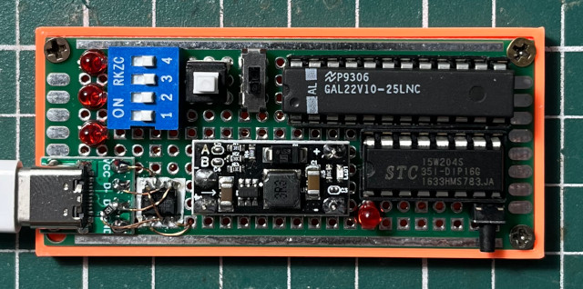
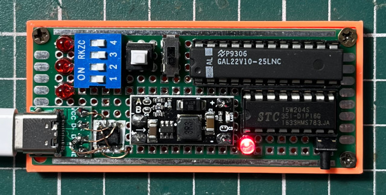

https://www.stcmicro.com/datasheet/STC15F204EA-cn.pdf
Register


main.c
參考資訊：
https://www.stcmicro.com/datasheet/STC15F204EA-cn.pdf
Register
main.c
#include <mcs51/8051.h>
#define LED P1_1
void delay(unsigned long ms)
{
while (ms--);
}
int main(void)
{
while (1) {
LED ^= 1;
delay(100000);
}
return 0;
}
Makefile
all: /usr/bin/sdcc main.c packihx main.ihx > main.hex flash: sudo stcgal -P stc15 -p /dev/ttyUSB0 -l 9600 -b 9600 -t 11059 main.hex clean: rm -rf main.ihx main.lst main.mem main.rst main.lk main.map main.rel main.sym main.hex
編譯、燒錄
$ make $ make flash
完成

